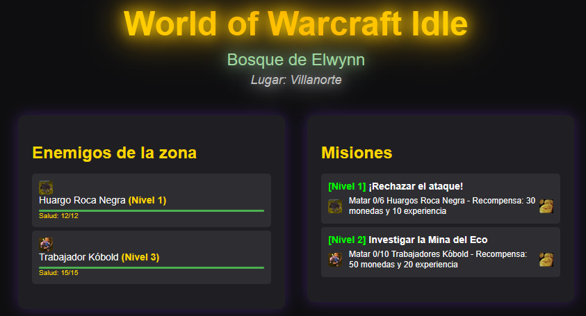
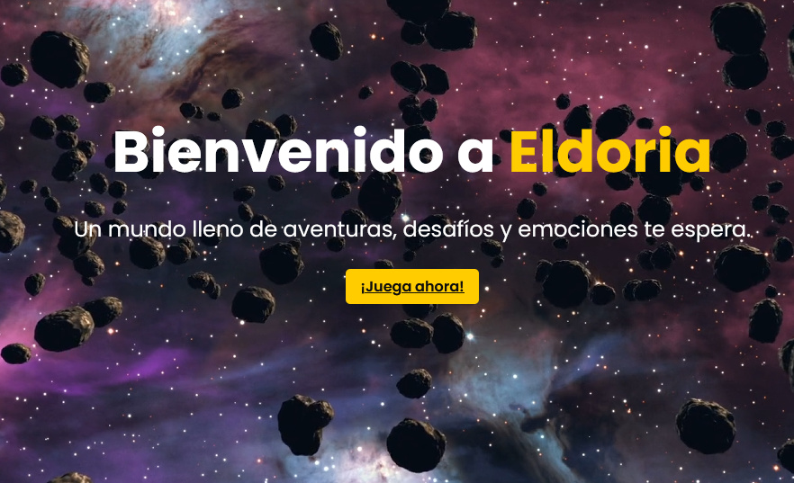

Mis Juegos
Aquí encontrarás todos mis juegos disponibles, con sus enlaces de descarga y una breve descripción de cada uno. ¡Disfruta jugando!
World of Warcraft Clicker

Descripción: Un juego clicker inspirado en el universo de World of Warcraft. Enfrenta a enemigos épicos, mejora tus habilidades y desbloquea nuevos niveles.
Estado: En fase Alpha.
Probar ahoraEl enigma de Aceps

Descripción: Aventura gráfica en la que debemos recorrer las pirámides de Cafax y Aceps, en un entorno pseudo-3D, para desvelar el misterio de la maldición del faraón Aceps I.
Como novedad en el género conversacional, las referencias gráficas son tan importantes como las descripciones escritas, contando cada estancia con su correspondiente pantalla.
¿Podrás descubrir la verdad?
Estado: En desarrollo.
PróximamenteLas Crónicas de Eldoria

Descripción: Un RPG épico con un mundo abierto lleno de misiones, personajes y batallas emocionantes. Explora Eldoria y forja tu leyenda.
Estado: En Preproducción.
Ver Web